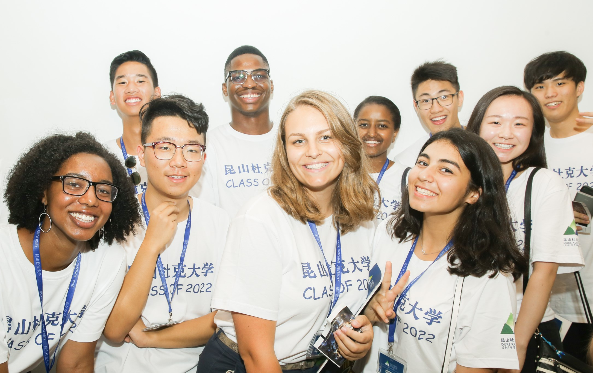

When I was 16, I became a FLEX exchange student and spent one school year at a high school in North Dakota. I left the US with a 4.0 GPA, a diploma and a burning desire to pursue my university degree abroad. My senior year in Serbia allowed me to aquire my Serbian high school diploma in philology and apply for international universities. In 2018, I left home once again but this time to study at a newly founded Duke Kunshan University in China. I spent two magical years living and studying near Shanghai until the pandemic made everyone move online. After a tough year and a half of online school in Serbia, I am now studying at Duke University in North Carolina, USA.
I major in Political Economy with tracks in Political Science, but my special academic interest is the development of African countries and the Southeast Asian Tigers. My current accumulative GPA stands at 3.84, and I am a Dean's List student for the 5th time. However my interests have recently extended out of my major into business, management and entrepreneurship, while my current passions lie in the intersectionality of the IT and sustainability industry.
Homepage -- Professional Experience & Training -- Travels & Adventurous